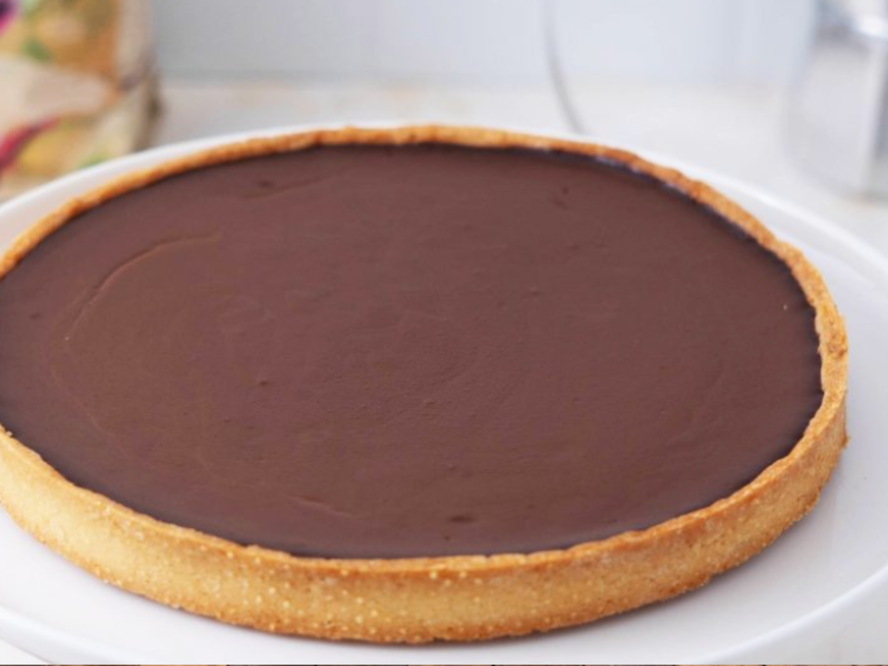

La tarte au chocolat
 Gabriel
Gabriel
Mars 2025
"Le plus élégant et le plus fin des desserts au chocolat", c'est une recette de Perla Servan-Schreiber que j'aime faire et refaire

- Temps de préparation Préparation 25 min / Cuisson 25 min / Repos 30 min
- Nombre de portions 6.
Ingrédients
Valeurs nutritionnelles
- Calories 732 kcal
- Glucides 53 g
- Protéines 7 g
- Lipides 51 g
Instructions
- 1 Préchauffez le four à 180° C. Amalgamez tous les ingrédients pour la pâte : le beurre, la vanille, le sucre glace, le blanc d'oeuf et la farine.
- 2 Faîtes une boule homogène et enveloppez-la dans un film alimentaire. Déposez au froid 30 min. Etalez la pâte sur 1 feuille de papier sulfurisé de 30 cm de diamètre. Farinez la feuille, vos mains et le rouleau.
- 4 Foncez le moule côté pâte en retirant le papier et faire cuire 15 min. Sortez la tarte. Baissez la température du four à 120° C.
- 5 Faire bouillir la crème. Hors du feu, ajoutez le chocolat, remuez au fouet. Ajoutez l'oeuf entier, puis le jaune d'oeuf et le sucre glace en mélangeant vivement. Versez sur la pâte sablée cuite et remettez 25 min au four à 120° C.
- 6 Le frigo est interdit.
üí° Astuce : On peut en faire une version v√©gane d√©licieuse. On remplace le beurre par de l'huile de coco (m√™me quantit√©), les oeufs sont remplac√©s par de la compote de pomme (60 g par oeuf) ou bien par du jus de pois-chiche.